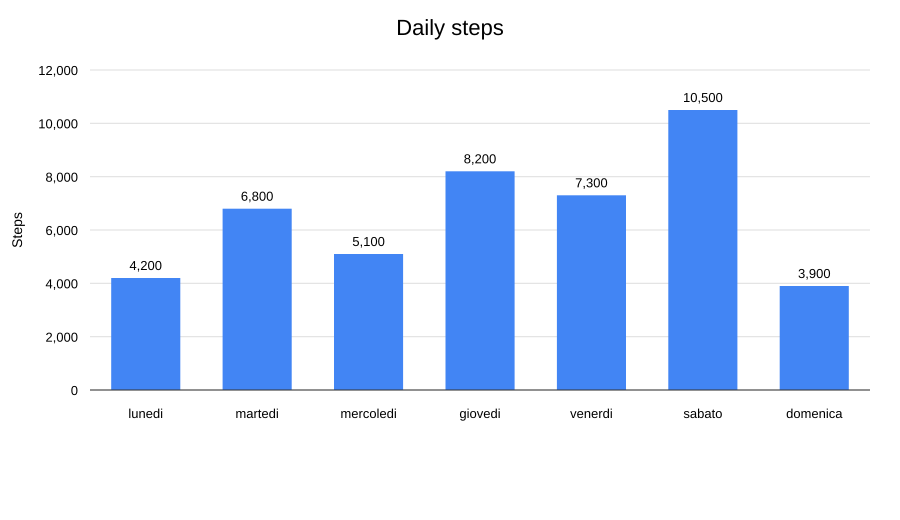

Weekly step analysis
A summary of steps recorded each day.
Steps by day

Daily results
| Day | Steps |
|---|---|
| Monday | 4,200 |
| Tuesday | 6,800 |
| Wednesday | 5,100 |
| Thursday | 8,200 |
| Friday | 7,300 |
| Saturday | 10,500 |
| Sunday | 3,900 |
A summary of steps recorded each day.

| Day | Steps |
|---|---|
| Monday | 4,200 |
| Tuesday | 6,800 |
| Wednesday | 5,100 |
| Thursday | 8,200 |
| Friday | 7,300 |
| Saturday | 10,500 |
| Sunday | 3,900 |